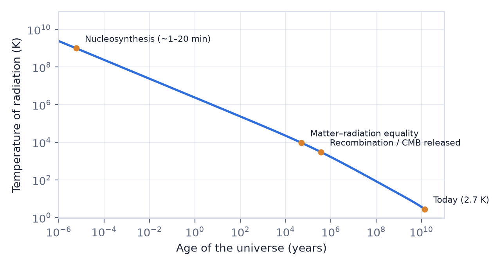

In this lesson you will learn
|
Running the film backwards
The universe is expanding and cooling. Running the film backwards, it becomes denser and hotter. With the Friedmann equations and known physics we can reconstruct its history in remarkable detail. The term Big Bang refers to this hot, dense early phase and its expansion, not to an explosion at a point in space.

Try it: Interactive Cosmic Timeline Drag the time slider of the Interactive Cosmic Timeline from the Planck era to today and watch the temperature, the energy budget and the epochs change. |
The epochs
Reading times and temperatures Times are measured since the Big Bang. Temperatures are those of the radiation filling the universe. The very earliest epochs are the most uncertain. |
| Time after Big Bang | Temperature | Epoch | What happens |
|---|---|---|---|
| before s | above K | Planck era | Quantum gravity; known physics breaks down |
| around s (?) | about K | Inflation (hypothesis) | Rapid expansion, origin of fluctuations |
| s | Electroweak transition | Particles acquire mass via the Higgs field | |
| Quark–hadron transition | Quarks bind into protons and neutrons | ||
| 1 s | Neutrino decoupling | Neutrinos stop interacting | |
| 1 s – 20 min | Nucleosynthesis | Helium and deuterium form | |
| 51 000 yr | 9 000 K | Matter–radiation equality | Matter begins to dominate |
| 380 000 yr | 3 000 K | Recombination | Atoms form; CMB released |
| 0.38–150 Myr | 3 000–60 K | Dark ages | No stars yet; gas cools and clumps |
| 150–1 000 Myr | 60–20 K | Cosmic dawn, reionisation | First stars and galaxies reionise the gas |
| about 7.6 Gyr | 4.5 K | Acceleration begins | Dark energy starts to dominate the dynamics |
| 9.2 Gyr | 3.9 K | Sun and Earth form | |
| 13.8 Gyr | 2.7 K | Today |
Very early universe: speculative
Nothing is known with confidence about the Planck era. Inflation is a leading hypothesis that explains why the universe is so flat and uniform and where the first density fluctuations came from, but it is not yet confirmed. These topics belong to the advanced part of the course.
From particles to nuclei: well tested
From about  seconds onward, the physics involved has been tested in
particle accelerators and nuclear laboratories. The predicted abundances of light
elements from nucleosynthesis match observations (lesson
L4.3). This is strong evidence that the universe really was hotter
than
seconds onward, the physics involved has been tested in
particle accelerators and nuclear laboratories. The predicted abundances of light
elements from nucleosynthesis match observations (lesson
L4.3). This is strong evidence that the universe really was hotter
than  K in its first minutes.
K in its first minutes.
Atoms and light: directly observed
At about 380 000 years the universe became transparent. The light released then is the cosmic microwave background, which we observe directly (lesson L4.4). It is a photograph of the universe as a baby.
Dark ages and cosmic dawn
After recombination the universe was filled with neutral gas and no stars: the dark ages. Gravity slowly pulled matter into dark matter halos. The first stars lit up perhaps 100–200 million years after the Big Bang. Their ultraviolet light ionised the surrounding hydrogen again, completing reionisation by about one billion years. The James Webb Space Telescope now observes galaxies from this epoch.
A universe dominated by different things The table follows the eras from lesson L3.1: radiation dominated until 51 000 years, matter until about 10 billion years, and dark energy since. Each shift changed how fast the universe expanded. |
Try it: Cosmology Calculator Enter z = 1090 (recombination), z = 20 (first stars) and z = 6 (end of reionisation) and read the age of the universe at each. |
Remember this
|